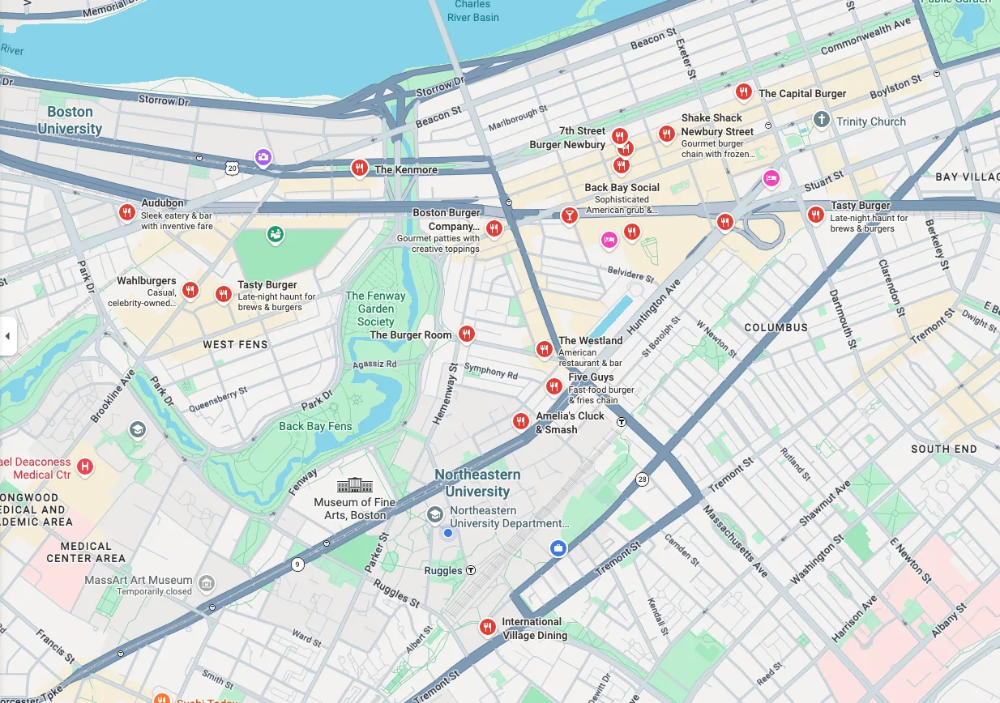
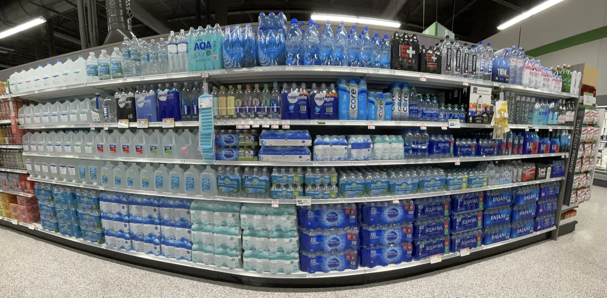
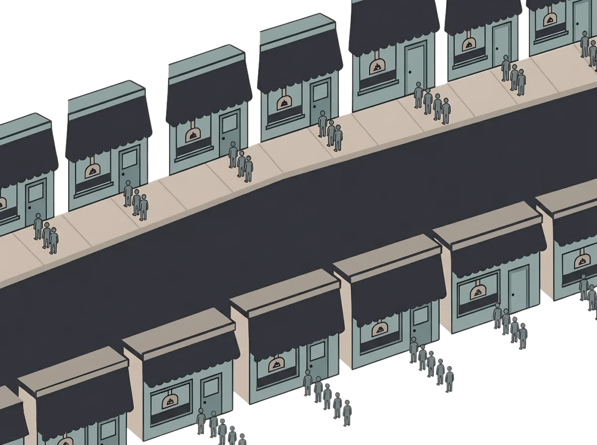
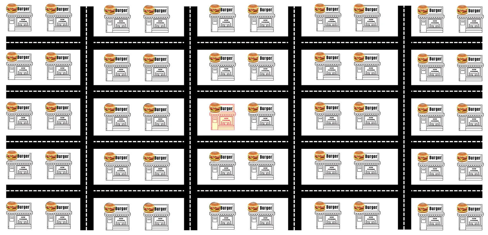
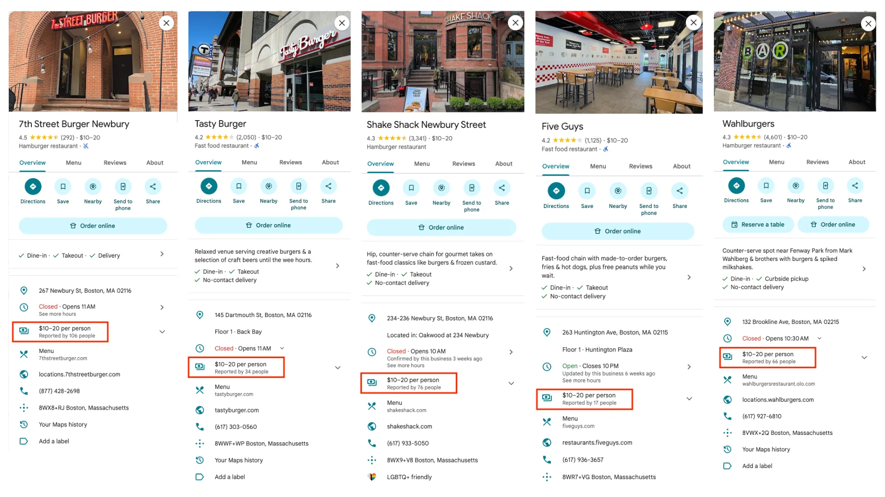
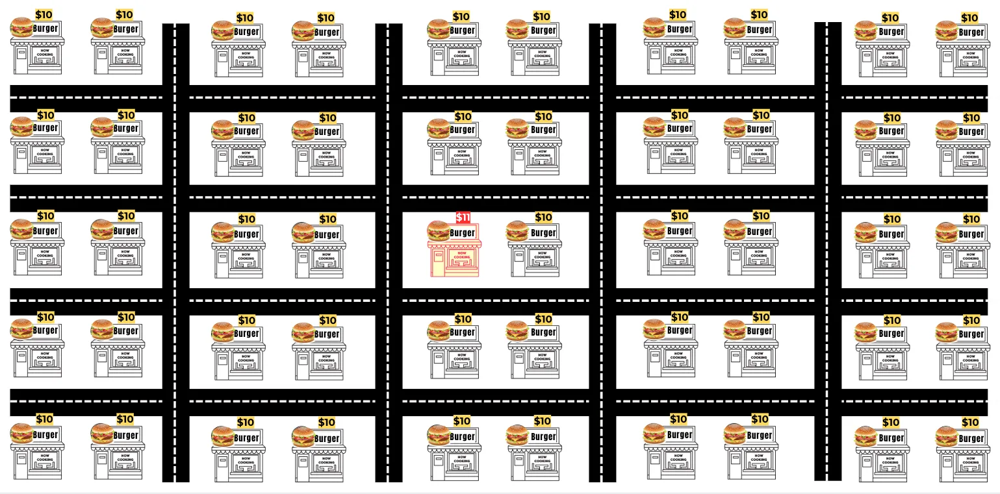
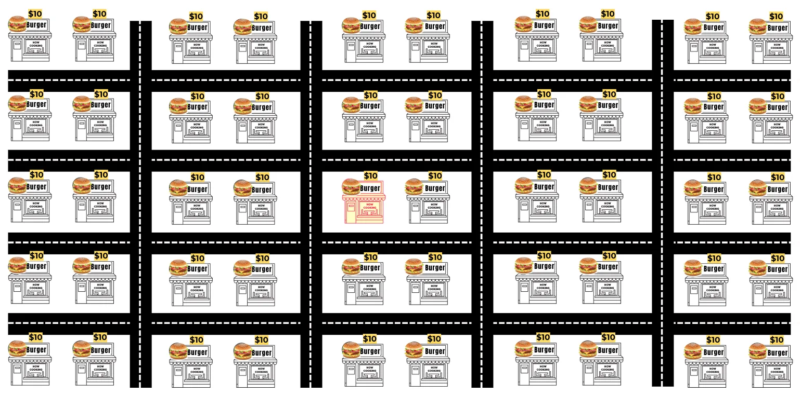
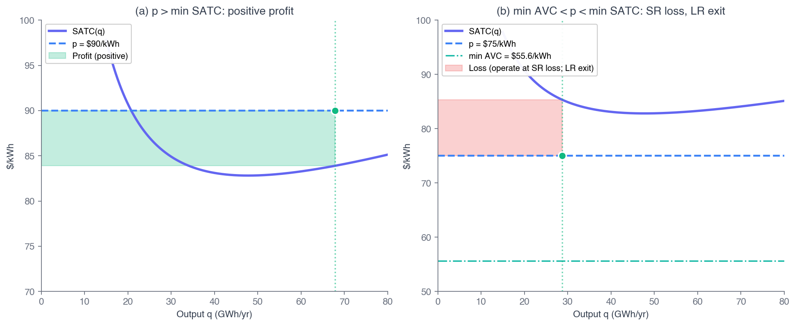

ECON 2316 • Microeconomic Theory • Chapter 9
Profit Maximization
and Firm Supply
Sam runs a burger shop with fifty competitors in a three-mile radius. How many burgers should he grill — and when should he shut the doors?
Dr. Richeng Piao
Department of Economics
Northeastern University
Learning Objectives
By the end of class today, you will be able to…
9.1
Set up the price-taking firm's profit-maximization problem \(\pi(q) = pq - c(w, r, q)\) and explain what "price taking" means. (Bloom L2)
9.2
Apply the profit-max first-order condition \(p = MC(q^*)\) and the second-order condition \(MC'(q^*) > 0\) to find the firm's optimal output. (Bloom L3)
9.3
Derive the firm's supply curve as the inverse of marginal cost above shutdown, and compute the Cobb-Douglas supply elasticity. (Bloom L4)
9.5
Distinguish the short-run shutdown rule (\(p < \min AVC\)) from the long-run exit rule (\(p < \min ATC\)) using quasi-rents. (Bloom L5)
From the Cost Function to the Output Choice
Ch 8 — What's cheapest?
- Cost-min given output: \(\min wL + rK\) s.t. \(f \geq q\)
- Cost function \(c(w, r, q)\)
- Marginal cost \(MC = \partial c/\partial q\)
- Output \(q\) was taken as given
Ch 9 — How much to make?
- Add an output price \(p\); the firm now chooses \(q\)
- Profit-max: \(\max_q\; pq - c(w, r, q)\)
- FOC \(\Rightarrow p = MC\); supply \(=\) inverse-MC
- When to operate vs shut down
The cost function from Ch 8 is the input to today's problem. Cost minimization solved "cheapest way to make \(q\)" at every \(q\); profit maximization picks the best \(q\). The headline result \(p = MC\) is the envelope-theorem identity from Ch 8 (\(MC = \mu\)), now viewed from the output-choice side.
Sam Has Cost Curves. What He Doesn’t Have Is a Market.
Chapter 8 gave us Sam’s burger shop from the inside — FC, VC, MC, ATC. Before Sam can choose how many burgers to sell, we have to look outside the shop.

Burger sellers within a mile of campus. Sam is one dot — Shake Shack, Five Guys, Tasty Burger, Wahlburgers, The Capital Burger…
Sam’s cost curves are the same either way. What changes is what he can do with a price — and that depends on five questions:
How many others sell burgers here?
Is Sam’s burger the same thing as a Shake Shack burger?
Could you open a burger place next semester?
If Sam posts $14 while everyone else posts $11, does he keep any customers?
If burgers pay well this year, will they still in 2031?
These five questions are not ad hoc — they are the checklist that classifies every market. They have names →
The Five Industry Characteristics
Commit these to memory — they are the checklist that decides whether a market is competitive, and you will meet them again across Chs 10–13.
1. Number of firms. A few giants? Hundreds of small shops? One sole provider?
2. Nature of the product. Homogeneous (perfect substitutes) or differentiated (each its own thing)?
3. Barriers to entry. Enter tomorrow with modest capital — or need patents, billions, licenses, network effects?
4. Control over price. Accept whatever the market sets (price-taker) or post your own (price-maker)?
5. Long-run economic profit. Does free entry compete profit to zero, or do barriers sustain it?
Based on these five differences, every market falls into one of four general structures — a spectrum of market power running from pure price-takers to pure price-makers. We meet all four next →
The Corn Market — A Perfect-Competition Case
Score the five characteristics on US field corn (No. 2 Yellow) — every one lines up.
1. Many firms — ~300,000 US corn farms; one grower planting more never nudges the price. ✓ very many
2. Homogeneous product — “No. 2 Yellow Corn” is a federal grade; every farm’s bushel is a perfect substitute. ✓ identical
3. Free entry & exit — no patents or licenses; rent land, buy seed, plant. ✓ low barriers
4. Price-takers — farmers accept the Chicago Board of Trade price (~$4.70/bu, 2026); they choose how much to plant, never the price. ✓ no control
5. Zero long-run profit — good years lure entry & expansion → supply rises → price falls back to min ATC. ✓ competed away
Verdict → Perfect Competition — pure price-taker, zero market power · ← this chapter
Another Competitive Market — Bottled Water

Store-brand water: many sellers, one near-identical product.
Run the same five-characteristic checklist — generic bottled water scores like corn.
1. Many sellers — national brands + every store’s own label. ✓
2. Near-homogeneous — purified water is purified water. ✓
3. Free entry & exit — modest startup cost (next slide). ✓
4. Price-takers — generic water competes on price, little power. ✓
5. Zero long-run profit — easy entry competes margins away. ✓
Verdict → Competitive — generic bottled water ≈ perfect competition.
Nuance: premium brands (Fiji, Evian) differentiate → monopolistic competition — but the commodity/store-brand segment is the competitive case.
How Easy Is It to Enter? — Bottling Water
Condition 3 in the real world: free entry is the engine behind the competitive result.

Quora: “How much does it cost to start a bottled-water company?”
A small operation can start for under $10,000; even a full business plan runs ~$20K–$500K by scale.
No patents. No licenses to fight for. No billion-dollar plant — pocket change next to wireless spectrum or a power grid.
Low barrier → free entry → many sellers → economic profit competed to zero
Perfect Competition: Other Examples
A share = any other share · one ounce of gold = another · one public price → millions of price-takers
What Sam Decides Each Day
🍔
1. Output
Given \(p = \$10\), how many burgers — fifty? eighty? → \(p = MC\) (§9.3)
👥
2. Labor
How many on shift? Too few stalls the line; too many eats the day. → the cost side, Ch 8
🔒
3. Shutdown
Slow week, revenue barely covers ingredients — stay open or close? → \(p\) vs min AVC (§9.4)
Today's plan. §9.2 sets up profit \(= pq - c\) and §9.3 finds the profit-max output where \(p = MC\). §9.4 settles shutdown and exit — when to stop producing, when to leave for good — with three real 2024 bankruptcies. That earns §9.5, the supply curve, which turns out to be the rising part of \(MC\); §9.7 closes on comparative statics — what a wage shock or a price drop does to \(q^*\).
Conditions 1 & 2 — Many Sellers, One Product
Many sellers: if one wheat farmer plants half an acre more, the global price doesn’t budge. 50 burger joints clears this bar; two airlines on a route does not.
Homogeneous: a bushel of Kansas wheat is a bushel of Kansas wheat. Grade-A Large eggs from Iowa = from Pennsylvania. Buyers genuinely don’t care.
Once buyers start caring about brand, recipe, or “vibe,” we’ve moved toward monopolistic competition (Ch 13).

The Basic Cheeseburger — Every Box Checked
Hold the extras — a basic cheeseburger is a near-commodity.
Run the four conditions on the basic cheeseburger market near campus:
1. Many buyers & sellers — ~50 shops within 3 miles, thousands of late-night buyers. ✓
2. Homogeneous product — one basic cheeseburger ≈ any other. ✓
3. Free entry & exit — rent a storefront, buy a griddle, open. ✓
4. Price-takers — everyone’s at ~$10; charge more, lose the block; charge less, bleed money. ✓
All four boxes checked → perfect competition.
Caveat: this only holds for the basic cheeseburger. Signature builds, premium toppings, and brand/vibe differentiate — that’s monopolistic competition (Ch 13).
Many Sellers — Just Look at the Map
The same map from the top of the hour — condition 1 in one glance. No single burger shop has the market power to move the price.
Fifty Shops Within Three Miles

About 50 shops compete inside a 3-mile radius of campus — and we’re studying just one product across all of them: the basic cheeseburger.
Conditions 3 & 4 — Free Entry, Price-Takers

Free entry & exit: a firm that spots profit can enter; a firm losing money can leave. This is what drives the long-run zero-profit result later in the chapter.
Price taker: a firm that must accept the market price as given. It chooses its quantity; it cannot influence the price.
A price-taker is not weak — they are rational. Charge above market → lose every customer. Charge below → light money on fire.
The Going Price — Everyone Lands in the Same Band

7th Street, Tasty Burger, Shake Shack, Five Guys, Wahlburgers — every one reports $10–20 per person. Nobody’s an outlier. That’s the band the market hands Sam.
Narrow it from a whole meal to the basic burger and the going price is about $10 — the number the next three slides deviate from. ↓
Charge Too High ($11) → Lose Everyone

Price your burger at $11 while the block sits at $10, and customers just walk to the next shop. You sell almost nothing.
Charge Too Low ($9) → Bleed Money
Drop to $9 and you’ll sell — but you torch margin you never needed to lose. The market would have paid $10.
Match the Market ($10) → You Sell

Price at $10, like everyone else, and you sell all you can make at the going rate. The only rational move.
Therefore: a Price-Taker
Above the market ($11) → lose every customer to the 49 rivals.
Below the market ($9) → sell, but bleed margin for no reason.
At the market ($10) → sell all you can make. The only move.
Sam can’t set the price — he can only take it. That’s a price-taker (condition 4), and it’s why his firm demand curve is flat.
The Firm’s Demand Curve Is Flat

Market demand slopes down. But the demand facing one firm is a horizontal line at the market price. How can both be true?
Because the firm is a tiny share. If Sam raises his price, he loses all 49 rivals’ worth of customers. If he lowers it, he can sell everything he makes without moving the market.
Marginal revenue (MR) = revenue from one more unit. For a price-taker, every unit sells at the same price, so…
P = MR
The single most important equation in the chapter. Everything builds on it.
Figure 10.1 — The Industry Sets the Price; the Firm Takes It
Panel A — Industry (Market)
Panel B — Firm (price-taker)
Section 3 · LO 10.3 & 10.4
The Competitive Firm’s Decision
Sam can’t choose his price — only his quantity
Profit = Revenue − Cost
Total Revenue
TR = P × Q
Total Cost
TC = FC + VC
Economic Profit
π = TR − TC
Sam’s mission is to maximize profit. Price is fixed (he’s a price-taker), so his only lever is how much to produce — that’s next. ↓
More Cooks, More Profit? — Start With One
Input
Output
Capital Costs
$50 / Day
× 1
Labor Costs
$40 / Day
× 1
Price
$10
× 10
Total Costs = $40 + $50 = $90
Total Revenue = P×Q = $10×10 = $100
Profit = Total Revenue − Total Cost = $100 − $90 = $10
Now do that for two cooks, three, four… the full run is tabulated two slides on.
Stop When Marginal Cost = Marginal Revenue
Going from the 4th to the 5th cook — what does that one extra batch add?
Additional Cost
1 × $100 = $100
Additional Revenue
10 × $10 = $100
When MC = MR, the extra batch exactly breaks even — that’s the profit-maximizing quantity.
Sam’s Burger Shop at a $10 Price
FC = $50/day (rent, griddle, POS). Labor is variable. Each worker makes 10 burgers/hr.
| Q | FC | VC | TC | MC | P | TR | MR | Profit |
|---|---|---|---|---|---|---|---|---|
| 10 | $50 | $40 | $90 | $9 | $10 | $100 | $10 | $10 |
| 20 | $50 | $90 | $140 | $5 | $10 | $200 | $10 | $60 |
| 30 | $50 | $150 | $200 | $6 | $10 | $300 | $10 | $100 |
| 40 | $50 | $230 | $280 | $8 | $10 | $400 | $10 | $120 |
| 50 | $50 | $330 | $380 | $10 | $10 | $500 | $10 | $120 |
| 60 | $50 | $450 | $500 | $12 | $10 | $600 | $10 | $100 |
Profit peaks at $120. The 41st–50th burgers each contribute $0 at the margin — so Sam makes all 50 (the higher tied quantity). Make 60 and the last burgers lose money.
The MR = MC Rule

- 40 → 50: adds $100 revenue, $100 cost — breaks even
- 50 → 60: adds $100 revenue, $120 cost — loses $20
- 30 → 40: adds $100 revenue, $80 cost — earns $20
Keep producing while MR > MC; stop when they’re equal. For a price-taker, since P = MR, this is just P = MC.
Figure 10.2 — The MR = MC Rule (Marginal Batch)
Poll #2 — From Total Cost to Marginal Cost
Maria runs a price-taking maple-syrup sugarhouse. Her short-run total cost is \(TC = 50 + 4Q + 0.05Q^2\) (dollars) — a fixed cost of \(\$50\) plus variable cost \(4Q + 0.05Q^2\).
What is her marginal cost \(MC\)?
60 sec to vote
Answer: B — \(MC = 4 + 0.10Q\)
Marginal cost is the derivative of total cost — differentiate \(TC\) term by term:
\(MC = \dfrac{dTC}{dQ} = \dfrac{d}{dQ}\big(50 + 4Q + 0.05Q^2\big) = 0 + 4 + 0.10Q = \mathbf{4 + 0.10Q}\)
The fixed cost \(\$50\) is constant, so its derivative is \(0\) — it never appears in \(MC\).
Why the others miss: A) power-rule slip — \(0.05Q^2 \to 0.10Q\), not \(0.05Q\) (bring the exponent 2 down). C) kept the fixed cost (\(50 + 4 = 54\)), but a constant's derivative is \(0\) — FC never enters \(MC\). D) didn't differentiate — that's the variable cost, not marginal cost.
§9.2
The Profit-Maximization Problem
\(\max_q\; \pi(q) = pq - c(w, r, q)\)
The Firm Chooses Output to Maximize Economic Profit
\[ \pi(q) = \underbrace{p \cdot q}_{\text{revenue}} - \underbrace{c(w, r, q)}_{\text{cost (Ch 8)}} \]
It picks output, not price
A price-taking firm is small relative to its market: its own production doesn't move \(p\). It takes \(p\), \(w\), and \(r\) all as given.
It reuses Ch 8's cost function
\(c(w,r,q)\) already solved the cheapest input mix at every \(q\). Profit-max just picks the best \(q\) given that.
Two equivalent statements — single-variable vs the joint problem over inputs:
\(\displaystyle \max_q\; pq - c(w,r,q)\)
\(\displaystyle \max_{q,K,L}\; pq - wL - rK \;\text{ s.t. }\; q \leq f(K,L)\)
Solve for \(q^*\), Recover Everything Else
The choice variable is \(q\). Once we find the optimum \(q^*\), every other object follows:
\(L^*\)
labor
\(K^*\)
capital
\(c^*\)
total cost
\(R^* = pq^*\)
revenue
\(\pi^* = R^* - c^*\)
profit
Recall from Principles — 1116 §10.2
A perfectly competitive firm faces a horizontal demand curve at the market price: it can sell any quantity at \(p\), but charge a penny more and it loses every customer to identical rivals. That flat demand curve is the geometric content of price taking. Today we make it formal: \(p = MC\), the supply curve, and the shutdown threshold.
A caution on language: we don't claim Sam writes down a Lagrangian. Competitive pressure — entry, exit, owners demanding returns — produces an outcome that looks like he computed the maximum. The theory describes the equilibrium of a process, not the cognition of a manager.
§9.3
The First-Order Condition: \(p = MC\)
Produce up to where the next unit's revenue equals its cost
Set the Derivative of Profit to Zero
Maximize \(\pi(q) = pq - c(w,r,q)\). Differentiate in \(q\):
\[ \frac{d\pi}{dq} = p - \frac{dc}{dq} = p - MC(q) = 0 \]
\(p = MC(q^*)\)
The intuition is "bake one more?"
- If \(p > MC\): the next unit earns \(p\), costs less than \(p\). Expand.
- If \(p < MC\): the next unit costs more than it earns. Cut back.
- Only at \(p = MC(q^*)\) is there no marginal incentive to move. Optimum.
For a price taker, \(p\) is the marginal revenue of one more unit (every unit sells at \(p\)). So \(p = MC\) equates marginal revenue and marginal cost — the producer-side twin of the consumer's equimarginal rule \(MU_i/p_i = \lambda\) from Ch 5.
Second-Order Condition: \(MC\) Must Slope Up
Check it's a maximum, not a minimum:
\[ \frac{d^2\pi}{dq^2} = -MC'(q^*) < 0 \;\Longleftrightarrow\; MC'(q^*) > 0 \]
The firm operates on the upward-sloping part of the \(MC\) curve. Short-run cost functions with diminishing returns to the variable input give rising \(MC\) everywhere, so the SOC holds automatically.
Heads Up — a classic trap
The SOC is "\(MC\) slopes up at \(q^*\)" — the slope \(MC'(q^*) > 0\). It is not "\(MC > 0\)," the level. Almost every cost function has \(MC > 0\) everywhere; the rising-\(MC\) condition is what rules out the falling-\(MC\) side where profit is minimized.
Calculus Corner 9.1. \(\pi(q)=pq-c(w,r,q)\Rightarrow \pi'(q)=p-MC(q)\). FOC: \(p=MC(q^*)\). \(\pi''(q)=-MC'(q^*)\), so the SOC for a max is \(MC'(q^*)>0\). \(p\) is marginal revenue (price-taking); \(MC\) is marginal cost; the FOC equates the two.
\(p = MC\) at the Burger Counter (\(p = \$10\))
Fixed cost \(\$50\)/day; the production schedule gives \(10, 20, \ldots, 60\) burgers at \(L = 1, \ldots, 6\) workers.
| Workers \(L\) | Burgers \(q\) | Variable cost | Total cost | \(MC = \Delta TC/\Delta q\) | Revenue \(pq\) | Profit |
|---|---|---|---|---|---|---|
| 1 | 10 | \$40 | \$90 | — | \$100 | \$10 |
| 2 | 20 | \$90 | \$140 | \$5 | \$200 | \$60 |
| 3 | 30 | \$150 | \$200 | \$6 | \$300 | \$100 |
| 4 | 40 | \$230 | \$280 | \$8 | \$400 | \$120 |
| 5 | 50 | \$330 | \$380 | \$10 \(= p\) | \$500 | \$120 |
| 6 | 60 | \$450 | \$500 | \$12 \(> p\) | \$600 | \$100 |
\(MC\) rises monotonically (diminishing returns to labor → SOC holds). At \(p = \$10\), marginal cost crosses price at \(L = 5\); a sixth worker pushes \(MC\) to \(\$12 > p\). Profit-max: 50 burgers, 5 workers, \$120/day.
Walkthrough 9.1 — Profit-Max by Calculus: Differentiate in \(q\)
Problem. Sam's cost curve in smooth form: \(c(q) = 50 + 2q + 0.08q^2\) (\(FC = \$50\)). (1) Differentiate and solve the FOC \(p = MC\) for \(q^*(p)\). (2) Read the shutdown (min AVC) and exit (min ATC) floors off the cost curve. (3) Classify \(p = \$10,\ \$5,\ \$1.50\).
Method (§9.3): \(\displaystyle\max_q\;\pi(q) = pq - c(q)\;\Rightarrow\;\frac{d\pi}{dq} = p - MC(q) = 0\;\Rightarrow\;p = MC.\)
(1) Differentiate → FOC → \(q^*(p)\)
\(MC(q) = c'(q) = 2 + 0.16q\)
\(p = 2 + 0.16q \;\Rightarrow\;\) \(q^*(p) = \dfrac{p-2}{0.16} = 6.25(p-2)\)
(2) Read the floors off \(c(q)\)
\(AVC = \dfrac{VC}{q} = 2 + 0.08q \;\Rightarrow\; \min AVC = \$2\)
\(ATC = \dfrac{50}{q} + 2 + 0.08q \;\Rightarrow\; \min ATC = \$6\) at \(q = 25\)
| Price \(p\) | \(q^* = 6.25(p-2)\) | vs floors | Verdict |
|---|---|---|---|
| \$10 | 50 | \(p > \$6\) | Profit — \(\pi = 500 - 350 = +\$150\) |
| \$5 | 18.8 | \(\$2 < p < \$6\) | Operate at a loss — \(\pi \approx -\$22\), revenue still covers VC |
| \$1.50 | 0 | \(p < \$2\) | Shut down — loss \(= -FC = -\$50\) |
Takeaway. One cost curve → one supply formula \(q^*(p) = 6.25(p-2)\) plus two floors (min AVC, min ATC) that classify every price. The discrete "\(p = MC\) rung" was this same first-order condition — now solved in closed form, good for any \(p\).
The Same Rule at the Gigafactory

Gigafactory locks (Chs 7–8)
\(A=8,\ \alpha=0.4,\ \beta=0.6,\ \bar K=4\)
\(w=0.10,\ r=0.13\)
New: \(p=\$84\)/kWh output price, \(m=\$55.6\)/kWh materials cost
The rising \(SMC(q)\) crosses \(p = \$84\)/kWh at \(q^* = 50.9\) GWh/yr. Same picture as the burger table — only the axes are in batteries, not burgers.
Read it left to right: below \(q^*\), \(p > MC\) (expand); above \(q^*\), \(p < MC\) (contract).
Where \(SMC\) comes from — four steps off the Ch 7–8 locks
1 · SR production, \(\bar K = 4\) fixed
\(q = A\bar K^{\alpha}L^{\beta} = 13.929\,L^{0.6}\)
2 · invert for labor
\(L(q) = (q/13.929)^{5/3}\)
3 · variable cost = wages + materials
\(VC(q) = wL(q) + mq\)
4 · differentiate
\(SMC = \dfrac{dVC}{dq} = 0.011967\,(q/13.929)^{2/3} + m\)
Materials enter as the constant \(m\); labor supplies the rising term. That is why \(SMC\) slopes up and never falls below \(m\) — which is exactly why \(\min AVC = m\) is the shutdown floor (§9.4).
Application — Tesla Semi Gigafactory Expansion, 2026
Our theoretical optimum \(q^* = 50.9\) GWh is about 60% above the Ch 7 plant anchor of 32 GWh. In early 2026 Tesla announced a Semi-truck capacity expansion at Nevada Gigafactory.
50,000 trucks/yr \(\times\) ~1 MWh per battery \(\approx\) 50 GWh of incremental production — within rounding error of \(q^*\).
Caveat: a forward-looking expansion isn't a pure static profit-max response — it bakes in expected future demand and the choice of installed capital \(\bar K\) for the next short run.
50.9
Theoretical \(q^*\) (GWh/yr) at \(p=\$84\)
50K
Semi trucks/yr target (Tesla, 2026)
~50
GWh incremental (\(\times\)1 MWh/truck)
\$3.5B
Announced capex line
Measuring the Firm's Profit
Profit is total revenue minus total cost — rewrite it with price and average total cost:
\[ \pi = TR - TC = (P\times Q) - (ATC\times Q) = (P - ATC)\times Q \]
Graphically, profit is the area of a rectangle at the profit-max output \(Q^*\):
- Width \(= Q^*\) (the quantity)
- Height \(= P - ATC\) (profit per unit)
\(P > ATC\): the rectangle is profit. \(P < ATC\): it's a loss.

Five Steps to Profit-Max on a Graph
§9.4
Shutdown and Exit
The asymmetry of sunk vs avoidable fixed costs
Short-Run Shutdown vs Long-Run Exit
Short run — \(\bar K\) sunk
Fixed cost \(r\bar K\) is paid whether or not you produce, so it cancels. Compare revenue to variable cost:
\(pq^* - VC \geq -r\bar K\)
Operate iff \(p \geq \min AVC\)
Long run — \(K\) adjustable
Nothing is sunk: sell equipment, walk away from leases, leave the industry. Every cost is avoidable, so compare to total cost:
\(pq^* \geq c_l(q^*)\)
Operate iff \(p \geq \min ATC\)
The asymmetry. SR uses min AVC (the fixed cost is sunk, so operating at a loss can beat not operating); LR uses min ATC (exit avoids every cost). The wedge between the two thresholds is exactly the avoidable fixed cost.
Shutdown, Loss-Min, and the Three Price Zones
Drag the price through all three zones. Break-even is min ATC $9; the shutdown floor is min AVC $4.20.
Zone 1 — P > min ATC: economic profit. Produce, pocket it.
Zone 2 — min AVC < P < min ATC: losing money, but stay open — you still cover some fixed cost.
Zone 3 — P < min AVC: every burger loses money before rent. Shut down.
Generic U-shaped costs here. We run the same three zones on the gigafactory’s own numbers a few slides from now — where AVC turns out not to be U-shaped.
Negative Profit — Operate at a Loss, or Shut Down?
In the short run the firm owes its fixed cost whether or not it produces. Lay the two options side by side — \(FC\) appears in both columns:
| Shut down (\(Q = 0\)) | Operate (\(Q = Q^*\)) | |
|---|---|---|
| Revenue | None | \(TR\) |
| Cost | \(FC\) | \(FC + VC\) |
| Profit / loss | \(\pi_{\text{shut}} = -FC\) | \(\pi_{\text{op}} = TR - FC - VC\) |
Operating wins when \(\;\pi_{\text{op}} > \pi_{\text{shut}}\;\): \(\quad TR - FC - VC \;>\; -FC \quad\Longrightarrow\quad \pi_{\text{op}} - \pi_{\text{shut}} = TR - VC \;>\; 0\)
Operate at a loss whenever \(TR > VC\). The \(FC\) cancels — it is paid either way. Fixed cost is sunk in the short run, so what matters is whether revenue beats variable cost, not total cost.
The Short-Run Shutdown Rule
Continue operating if
\(TR \geq VC \quad\text{or}\quad P \geq AVC\)
Shut down if
\(TR < VC \quad\text{or}\quad P < AVC\)
Divide \(TR \geq VC\) by the loss-minimizing quantity \(Q^*\): the cutoff is \(\;P \geq AVC(Q^*)\), i.e. price at or above minimum AVC.
Keep operating as long as you cover your variable cost.
Poll #3 — Open the Truck, or Shut Down Today?
Priya runs a taco truck. She paid \(\$600\) for a game-day vendor permit — non-refundable (a sunk fixed cost). Each order costs \(\$3\) in ingredients + packaging and sells for \(\$8\). The home team is out of playoff contention, so the crowd is thin — she expects only 100 orders today.
Should Priya open the truck today?
60 sec to vote
Answer: B — Open the truck (and lose less)
Shutdown rule: operate iff \(p \geq AVC\). Here \(p = \$8 > AVC = \$3\) → open. Compare the two losses:
Open: \(TR = \$8\times 100 = \$800\); \(VC = \$300\); \(FC = \$600\) ⇒ profit \(= \mathbf{-\$100}\)
Shut down: loss \(= -FC = \mathbf{-\$600}\)
Traps: A) a loss isn't a reason to close — operating loses less. C) \(p < ATC = \$9\) is true, but that's the long-run exit rule; the short-run shutdown rule compares \(p\) to \(AVC = \$3\). D) not equal — \(-\$100 \neq -\$600\). The \$500 of revenue above variable cost is what makes opening worth it.
Quasi-Rents: the Contribution to Recovering Sunk Cost
Quasi-rents \(= pq - VC\). Positive quasi-rents mean operating beats shutting down — even when profit is negative.
Heads Up — quasi-rents \(\neq\) profit
Quasi-rents \(= R - VC\). Profit \(= R - VC - FC\). They differ by the fixed cost. A firm can have positive quasi-rents and negative profit — operating, losing money, and rationally choosing to. Shutdown uses quasi-rents; exit uses profit.
Recall from Principles — 1116 §10.3
Sam's three zones as price fell \(\$8 \to \$7 \to \$6.50\): positive profit, operate-at-a-loss, shut down. We now write them as \(p \geq \min AVC\) (SR) and \(p < \min ATC\) (LR exit).

Three Price Regimes at a Glance

\(p = \$95\): \(p > \min ATC\) \(\Rightarrow\) positive profit.
\(p = \$75\): \(\min AVC < p < \min ATC\) \(\Rightarrow\) operate at a loss (SR), exit (LR). The zone the closing Walgreens stores are in.
\(p = \$40\): \(p < \min AVC\) \(\Rightarrow\) shut down. Every unit loses money before fixed cost.
The AVC rises monotonically from the materials floor — it isn't U-shaped, because the gigafactory cost is Cobb-Douglas (not the cubic textbook case). So min AVC \(= m = \$55.6\)/kWh sits at \(q \to 0\) (where \(MC = AVC\)); min SATC \(= \$82.8\)/kWh at \(q \approx 48\). The classic U-shaped AVC with \(MC\) through its bottom is the generic three-zones figure.
Walkthrough 9.2 — Price Collapse Below Materials Cost
Problem. Gigafactory baseline (\(\bar K=4, m=0.0556\)). The output price collapses to \(p_{\text{shock}} = 0.0334\) B\$/GWh (\(\$33.40\)/kWh, below materials cost). (1) SR optimal output? (2) Loss at shutdown? (3) Verify shutdown beats producing \(q = 10\).
Set up & solve
(1) Min AVC \(= m = 0.0556\). Since \(p_{\text{shock}} = 0.0334 < m\), the firm can't cover even marginal materials cost. The FOC has no positive solution: \(q_s^* = 0\) (shutdown).
(2) At \(q=0\): pay the sunk fixed cost, produce nothing. Loss \(= -r\bar K = -0.52\) B\$/yr \(= -\$520\)M/yr.
(3) Check \(q = 10\)
\(VC = 0.058 + 0.556 = 0.614\); revenue \(= 0.334\). Profit \(= 0.334 - 0.614 - 0.52 = -0.800\) B\$/yr.
\(0.058 = wL(10)\), the labor VC: invert \(q = 13.929\,L^{0.6}\) to get \(L(10) = (10/13.929)^{1/0.6}\approx 0.576\), so \(wL = 0.10\times 0.576\). The other piece \(0.556 = mq\) is materials VC.
\(-\$800\)M is worse than the \(-\$520\)M shutdown loss. Any positive \(q\) widens the loss. Shutdown is optimal.
Takeaway. When the price falls below materials cost, the next unit loses money on materials alone — before labor even enters. Shutdown caps the loss at the sunk fixed cost: the SR version of "stop digging."
Three Real 2024 Decisions — SR Shutdown vs LR Exit
Walgreens (Oct 2024): closes ~1,200 stores over three years, keeps ~7,500 open. The timing is the tell — a store below AVC goes dark this quarter, not in 2027. So the 1,200 sit in \(AVC < P < ATC\): worth running while the lease is sunk, not worth renewing → LR exit. The 7,500 are the \(P > ATC\) keepers.
Spirit Airlines (Nov 2024): Chapter 11 at the firm level, but SR shutdown played out route by route — with jet fuel \(+95\%\) to \$4.88/gal, ticket revenue fell below per-flight AVC on 14 cancelled airports.
Northvolt (Nov 2024): textbook LR exit. Production cost \(\sim\$130\)/kWh against a \$84/kWh China-frontier price: \(p < ATC\) sustained even at full capacity. Operations weren't value-creating at any output.

§9.5
Supply = the Inverse of Marginal Cost
\(q^*(p) = MC^{-1}(p)\) · above the shutdown price
The Supply Curve Is the Rising \(MC\) Curve
The firm is a price taker — its output is a drop in the ocean, so \(p\) arrives from outside, set where market supply meets market demand. Building that market curve (the horizontal sum over all firms) is Ch 10's job; here we derive the one firm piece it sums.
The FOC \(MC(q^*) = p\) is one equation in \(p\) and \(q^*\). Solve it for every \(p\) and you trace a function:
\[ q^*(p) = \text{the } q \text{ solving } MC(q) = p \]
Heads Up
Supply isn't a separate mysterious object. It's literally the rising part of the \(MC\) curve, with axes flipped (price up, quantity across). Below min AVC the firm produces zero — supply "lives on the price axis."

Closed-Form Cobb-Douglas Supply & Its Elasticity
Calculus Corner 9.3. Differentiating the FOC: \(dq^*/dp = 1/MC'(q^*) > 0\) — supply slopes up because \(MC\) slopes up. Supply is the \(MC\) curve read backwards, so take the gigafactory \(SMC(q) = 0.011967\,(q/13.929)^{2/3} + m\), set \(SMC(q) = p\), and invert:
\((q/13.929)^{2/3} = \dfrac{p - m}{0.011967}\) → raise both sides to the \(3/2\) →
\[ q_s^*(p) = 13.929\left(\frac{p - m}{0.011967}\right)^{1.5}\ \text{for } p > m,\qquad q_s^*(p)=0 \text{ otherwise} \]
Not new numbers: \(13.929 = A\bar K^{\alpha} = 8\cdot 4^{0.4}\) and \(0.011967 = w/(\beta A\bar K^{\alpha})\) — both inherited from the Ch 8 cost function.
Supply elasticity
\(\dfrac{d\ln q_s^*}{d\ln p} = 1.5 \cdot \dfrac{p}{p-m}\)
Leading \(1.5 = \beta/(1-\beta)\) is set by the production exponent; \(p/(p-m)\) amplifies through the thin value-added margin. At baseline: 4.44.
Three consequences
- Market supply (Ch 10) = horizontal sum of firms' \(MC\) curves.
- Anything shifting \(MC\) (wage, capital, technology) shifts supply.
- Supply elasticity is set by the technology: \(\beta/(1-\beta)\) under Cobb-Douglas with no materials.
Walkthrough 9.3 — Cobb-Douglas SR Firm Supply
Problem. Same Cobb–Douglas gigafactory setup. Nothing to derive — we built the supply curve on the previous slide. Just plug numbers into it:
\(q_s^*(p) = 13.929\left(\dfrac{p - m}{0.011967}\right)^{1.5}\), \(m = 0.0556\), and elasticity \(= 1.5 \cdot \dfrac{p}{p - m}\)
(1) Tabulate \(q_s^*\) at \(p = 0.060,\, 0.070,\, 0.080,\, 0.084,\, 0.090\). (2) Supply elasticity at \(p = 0.084\)?
(1) Tabulate \(q_s^*(p)\)
| \(p\) (B\$/GWh) | \(q_s^*\) (GWh) |
|---|---|
| 0.060 | 3.10 |
| 0.070 | 18.37 |
| 0.080 | 40.55 |
| 0.084 | 50.93 ✓ (= W9.1) |
| 0.090 | 67.92 |
(2) Elasticity at the baseline
Substitute \(p = 0.084\), \(m = 0.0556\):
\(1.5 \cdot \dfrac{0.084}{0.084 - 0.0556} \;=\; 1.5 \cdot \dfrac{0.084}{0.0284} \;=\; \mathbf{4.44}\)
A 1% price rise draws out a 4.4% output response — elastic, because the value-added margin \(p - m\) is thin.
Takeaway. The SR supply elasticity has a clean closed form \(1.5 \cdot p/(p-m)\): the \(1.5 = \beta/(1-\beta)\) is set by the production exponents, and \(p/(p-m)\) amplifies the response through the thin value-added margin.
Calibration carried over from Chs 7–8: \(A = 8\), \(\alpha = 0.4\), \(\beta = 0.6\), \(\bar K = 4\), \(w = 0.10\), \(r = 0.13\), \(m = 0.0556\) — hence \(13.929 = A\bar K^{\alpha}\) and \(0.011967 = w/(\beta A\bar K^{\alpha})\).
§9.7
Comparative Statics
How \(q^*\) responds to a wage shock and a price drop
Walkthrough 9.5 — A 20% Wage Shock

Wage rises 20% (\(w: 0.10 \to 0.12\), the UAW spillover from Ch 8). Output price stays at \(p = \$84\). How does the firm re-optimize?
−24%
Output \(q^*\): 50.9 → 38.7 GWh
−37%
Labor \(L^*\): 8.68 → 5.50 K
Profit flips: \(+\$58.6\)M \(\to -\$80\)M. The firm still operates (\(p > m\)), absorbing a SR loss. Labor falls faster than output because \(L_s \propto q^{1.667}\) under \(\beta = 0.6\).
The dashed AVC rises from the materials floor \(m\) — monotonic, not U-shaped (Cobb-Douglas, not the cubic case). The firm operates because \(p = \$84 > m = \$55.6\).
Walkthrough 9.6 — A 30% Output-Price Drop

Price falls 30% (\(p: 0.084 \to 0.0588\)). The value-added margin \(p - m = 0.0032\) is razor-thin.
−96%
Output \(q^*\): 50.9 → 1.9 GWh
SR: stay
\(p_1 > m\): quasi-rents \(+\$2\)M
LR: exit. \(p_1 = 0.0588 < \min ATC \approx 0.0828\). The firm operates today (loss \$518M, a hair under the \$520M shutdown loss) but cannot cover total cost — it exits.
The dashed AVC rises from the materials floor \(m\) — monotonic, not U-shaped (Cobb-Douglas, not the cubic case). \(p_1\) sits just above it, so the firm still operates in the SR.
Chapter Summary
Profit-max problem
Choose \(q \geq 0\) to maximize \(\pi = pq - c(w,r,q)\). FOC: \(p = MC(q^*)\). SOC: \(MC'(q^*) > 0\) (\(MC\) slopes up).
Supply = inverse-MC
\(q^*(p)\) solves \(MC(q)=p\) above min AVC, else zero. CD SR elasticity \(= \dfrac{\beta}{1-\beta}\cdot\dfrac{p}{p-m}\).
Shutdown vs exit
SR: operate iff \(p \geq \min AVC\) (FC sunk). LR: iff \(p \geq \min ATC\). Quasi-rents \(= pq - VC\) can be \(+\) while profit is \(-\).
Gigafactory thread
At \(p=\$84\), \(m=\$55.6\): \(q^*=50.9\) GWh, \(L^*=8.68\)K, \(\pi^*=\$58.6\)M. \(p\) inherited by Ch 10.
Locks carried into Ch 10: \(p = \$84\)/kWh, \(m = \$55.6\)/kWh (per-unit materials cost), plus all Ch 7–8 calibration. The gigafactory thread retires at the end of Ch 10.
Coming Up — Chapter 10: Perfect Competition
Today we built the firm's supply curve. Chapter 10 aggregates it into industry supply and closes the loop with free entry and exit.
Market supply \(= \displaystyle\sum_{\text{firms}} q_i^*(p) \quad\Rightarrow\quad \text{free entry drives } p \to \min LRAC,\ \ \pi = 0\)
- Horizontal summation: add up today's firm supply curves to get market supply.
- Free-entry equilibrium: with constant returns, entry pins the price down — it settles at \(LRMC + m = \$82.81\)/kWh and the number of firms \(N^*\) adjusts.
- Welfare theorem: the competitive equilibrium maximizes total surplus.
- Gigafactory thread closes: the locked \(p = \$84\) becomes endogenous.
Before next class: read manuscript §10.1–§10.3. Today's firm supply curve is the building block.
Questions?
Dr. Richeng Piao · ECON 2316 · Chapter 9